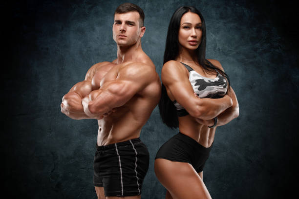

PHYSICAL APPEARANCE
As a bodybuilder, physical appearance is a significant aspect of the sport, reflecting dedication,
discipline, and hard work. Here's how physical appearance is cultivated and valued in bodybuilding:
1.Muscle Size and Definition: Bodybuilders strive to develop muscular size and
definition through targeted resistance training, nutrition, and supplementation. The aesthetic ideal
in
bodybuilding emphasizes well-developed muscles with symmetry, proportion, and low body fat levels.
Achieving the desired level of muscle mass and definition requires meticulous attention to training
intensity, volume, and technique, as well as adherence to a structured nutrition plan designed to
support muscle growth and minimize body fat.
2.Body Composition: Body composition plays a critical role in bodybuilding, with
competitors aiming to achieve a balance of muscle mass and leanness to showcase their physique on
stage.
This involves reducing body fat levels to enhance muscle definition and vascularity while preserving
or
increasing muscle mass through resistance training and proper nutrition. Bodybuilders often undergo
phases of bulking and cutting to manipulate body composition and achieve the desired aesthetic for
competition.
3.Symmetry and Proportion: Symmetry and proportion are key principles in
bodybuilding aesthetics, with competitors striving to develop balanced muscle groups and
proportional
physique. This involves focusing on building harmonious proportions between muscle groups, such as
the
chest, shoulders, back, arms, and legs, to create a visually pleasing physique from every angle.
Attention to detail in muscle symmetry, shape, and proportion is essential for maximizing scoring in
bodybuilding competitions.\
4.Vascularity and Conditioning: Vascularity, or the visibility of veins under
the
skin, is often regarded as a sign of low body fat levels and muscularity in bodybuilding. Achieving
optimal vascularity requires reducing body fat while maintaining or increasing muscle mass, as well
as
optimizing hydration levels and blood flow. Conditioning refers to the overall appearance of muscle
definition, separation, and hardness, which is accentuated through strategic dieting, posing, and
presentation on stage.
5.Presentation and Posing: Presentation and posing are crucial aspects of
showcasing
the physique in bodybuilding competitions. Competitors meticulously choreograph their posing
routines to
highlight their strengths, minimize weaknesses, and emphasize muscle definition, symmetry, and
proportions. Posing techniques such as flexing, twisting, and contracting muscles help create visual
illusions of size, shape, and conditioning to impress judges and audience members.
6.Confidence and Stage Presence: Confidence and stage presence are intangible
yet
essential elements of physical appearance in bodybuilding. Competitors must exude confidence, poise,
and
charisma on stage to command attention and make a memorable impression. Confidence in one's physique
and
presentation can elevate the overall aesthetic impact and contribute to success in bodybuilding
competitions.
In summary, physical appearance in bodybuilding encompasses muscle size, definition, symmetry,
proportion, vascularity, conditioning, presentation, and confidence. Achieving the desired aesthetic
requires dedication, discipline, and attention to detail in training, nutrition, posing, and stage
presentation. By striving for excellence in physical appearance, bodybuilders showcase their hard
work,
commitment, and passion for the sport on stage for judges and audiences to admire.

POTENTIAL PAINS AND INJURIES
As a bodybuilder, there are several potential pains and injuries that athletes may encounter due to
the
nature of their training regimen. These include:
1.Muscle Strains and Tears: Muscle strains and tears are common injuries in
bodybuilding, particularly during heavy lifting or improper form. Strains occur when muscle fibers
stretch or tear due to overexertion or sudden movements, leading to pain, swelling, and reduced
range of
motion. Commonly affected muscles include the hamstrings, quadriceps, calves, and shoulders. Proper
warm-up, stretching, and gradual progression in weightlifting can help reduce the risk of muscle
strains
and tears.
2.Tendonitis: Tendonitis, or inflammation of the tendons, can occur in
bodybuilders
due to repetitive stress or overuse of certain muscle groups. Common areas affected by tendonitis
include the shoulders (rotator cuff tendonitis), elbows (tennis or golfer's elbow), and knees
(patellar
tendonitis). Symptoms may include pain, swelling, and stiffness in the affected area. Rest, ice,
stretching, and modifying training techniques can help alleviate symptoms and prevent further
aggravation of tendonitis.
3.Ligament Sprains: Ligament sprains occur when the ligaments that connect bones
and
stabilize joints are stretched or torn, often due to sudden movements or excessive force. In
bodybuilding, ligament sprains commonly affect joints such as the knees, ankles, and wrists.
Symptoms
may include pain, swelling, instability, and limited range of motion. Proper warm-up, strengthening
exercises, and using proper form during lifts can help prevent ligament sprains.
4.Lower Back Pain: Lower back pain is a prevalent issue among bodybuilders,
particularly those who engage in heavy squats, deadlifts, or overhead presses. Poor form, improper
lifting techniques, and muscle imbalances can contribute to lower back pain. Symptoms may include
stiffness, soreness, muscle spasms, and radiating pain down the legs. Strengthening the core
muscles,
improving posture, and incorporating exercises to target the lower back and glutes can help
alleviate
lower back pain and reduce the risk of injury.
5.Joint Injuries: Bodybuilding places significant stress on the joints,
increasing
the risk of injuries such as sprains, strains, and degenerative conditions like osteoarthritis.
High-impact exercises, repetitive movements, and heavy loads can contribute to joint wear and tear
over
time. Proper warm-up, using proper form, and incorporating exercises to strengthen the muscles
surrounding the joints can help reduce the risk of joint injuries.
6.Overuse Injuries: Overuse injuries occur when repetitive movements or
excessive
training volume lead to tissue breakdown and inflammation. Bodybuilders may experience overuse
injuries
in muscles, tendons, ligaments, or joints that are subjected to repetitive stress. Symptoms may
include
pain, swelling, stiffness, and reduced performance. Rest, modifying training volume or intensity,
and
incorporating cross-training or active recovery activities can help prevent overuse injuries and
promote
recovery.
7.Dehydration and Electrolyte Imbalance: Intense workouts and sweating can lead
to
dehydration and electrolyte imbalances, increasing the risk of muscle cramps, fatigue, and
heat-related
illnesses. Proper hydration, electrolyte replenishment, and monitoring fluid intake before, during,
and
after workouts are essential for preventing dehydration and maintaining optimal performance and
recovery.
By being proactive in addressing potential pains and injuries, bodybuilders can minimize the risk of
setbacks, stay healthy, and continue progressing towards their fitness goals safely. Listening to
their
bodies, using proper form, and incorporating preventive measures into their training routines are
essential for long-term success in bodybuilding.
.jpg)
WHEN TO REDUCE BODYBUILDING METHODS
Knowing when to reduce bodybuilding methods is crucial for maintaining progress, preventing burnout,
and avoiding overtraining injuries. Here are some indicators that it may be time to dial back on
bodybuilding methods:
1. Plateau in Progress: If you've been consistently following a bodybuilding
program for an extended period but notice a plateau in muscle growth or strength gains, it may be a
sign that your body needs a change. Plateaus often indicate that your muscles have adapted to the
current training stimulus, and it's time to introduce new exercises, increase intensity, or modify
your training program to continue making progress.
2.Persistent Fatigue or Lack of Motivation: Feeling constantly fatigued,
mentally drained, or lacking motivation to train are signs of potential overtraining. Pushing
through workouts when you're exhausted or unmotivated can lead to diminished performance, increased
risk of injury, and burnout. It's essential to listen to your body's signals and prioritize rest and
recovery when needed. Taking a deload week or reducing training volume temporarily can help recharge
your energy levels and reignite your motivation for training.
3.Chronic Muscle Soreness or Joint Pain: While some muscle soreness is normal
after intense workouts, chronic or debilitating muscle soreness, joint pain, or discomfort should
not be ignored. These symptoms may indicate overuse injuries, muscle imbalances, or improper
exercise technique. Continuing to train through pain can exacerbate injuries and lead to long-term
damage. It's essential to address the underlying causes of pain, seek professional guidance if
necessary, and modify your training program to avoid aggravating injuries further.
4.Decreased Performance or Technique Breakdown: If you notice a decline in
exercise performance, such as decreased strength, endurance, or coordination, it may be a sign of
fatigue or overtraining. Technique breakdown during exercises, such as poor form, instability, or
reduced range of motion, can also indicate muscular fatigue or neuromuscular fatigue. Scaling back
on training volume, intensity, or frequency can allow your body to recover and restore optimal
performance and technique.
5.Lack of Recovery or Adaptation: Adequate recovery is essential for muscle
growth, repair, and adaptation to training stimuli. If you find that you're not recovering
adequately between workouts, experiencing frequent injuries, or feeling constantly fatigued despite
sufficient rest, it may be a sign that your body is under stress. Incorporating more rest days,
reducing training volume or intensity, and prioritizing recovery modalities such as foam rolling,
stretching, or massage can help improve recovery and prevent overtraining.
.jpg)
TYPE OF BODYBUILDING
Bodybuilding is a multifaceted sport and lifestyle that encompasses various approaches, techniques,
and goals. Here's an overview of the different types of bodybuilding:
1.Traditional Bodybuilding: Traditional bodybuilding focuses on developing
muscular size, symmetry, and definition through resistance training, nutrition, and supplementation.
Competitors in traditional bodybuilding contests are judged based on criteria such as muscle size,
proportion, conditioning, and overall presentation. The goal is to achieve a balanced and aesthetic
physique with well-developed muscles in every major muscle group.
2.Classic Physique: Classic physique is a category that bridges the gap between
traditional bodybuilding and men's physique. Competitors aim for a more classic and timeless
physique reminiscent of bodybuilders from the golden era of the sport, such as Arnold Schwarzenegger
and Frank Zane. Classic physique competitors display muscularity, symmetry, and conditioning, with
an emphasis on proportion and aesthetics rather than sheer size.
3.Men's Physique: Men's physique is a category that emphasizes a lean and
aesthetic physique with less emphasis on muscle size and more focus on overall aesthetics, including
muscular definition, v-taper, and symmetry. Competitors wear board shorts and perform quarter turns
to showcase their physique from different angles. Men's physique competitions prioritize a
beach-ready look with well-defined abs, shoulders, and arms.
4.Women's Physique: Women's physique competitions showcase muscularity,
conditioning, and symmetry while still maintaining feminine proportions. Competitors in women's
physique divisions display a high level of muscle mass, definition, and overall conditioning, often
incorporating poses that highlight muscularity and shape. Women's physique contests celebrate
strength, athleticism, and femininity in a competitive setting.
5.Fitness: Fitness competitions combine elements of strength, flexibility, and
performance. Competitors in fitness divisions perform routines that include a combination of
strength-based moves, gymnastics, dance, and choreography. Fitness competitors are judged on their
overall presentation, creativity, athleticism, and execution of routines, which often incorporate
elements such as flips, spins, and acrobatics.
6.Bodybuilding for Health and Wellness: Beyond competitive bodybuilding, many
individuals engage in bodybuilding as a lifestyle choice to improve health, fitness, and overall
well-being. Bodybuilding for health and wellness focuses on building muscle, reducing body fat, and
improving strength, endurance, and cardiovascular health through structured resistance training,
nutrition, and lifestyle habits. This approach to bodybuilding prioritizes long-term health and
sustainability rather than competition.
7.Natural Bodybuilding: Natural bodybuilding involves training and competing
without the use of performance-enhancing drugs or anabolic steroids. Natural bodybuilders adhere to
strict drug-testing protocols to ensure fair competition and maintain integrity within the sport.
Natural bodybuilding promotes a drug-free lifestyle, emphasizing the importance of hard work,
dedication, and discipline in achieving physique goals.
8.Powerbuilding: Powerbuilding combines elements of powerlifting and
bodybuilding to build both strength and muscle size simultaneously. Powerbuilders focus on compound
lifts such as squats, deadlifts, bench presses, and overhead presses to build strength and muscle
mass. Powerbuilding programs typically incorporate heavy, low-rep sets for strength development,
along with moderate to high-rep sets for hypertrophy and muscle growth.
Each type of bodybuilding offers its own unique challenges, rewards, and opportunities for personal
growth and achievement. Whether you're interested in competitive bodybuilding, improving overall
fitness, or pursuing specific physique goals, there's a type of bodybuilding that can align with
your aspirations and priorities.